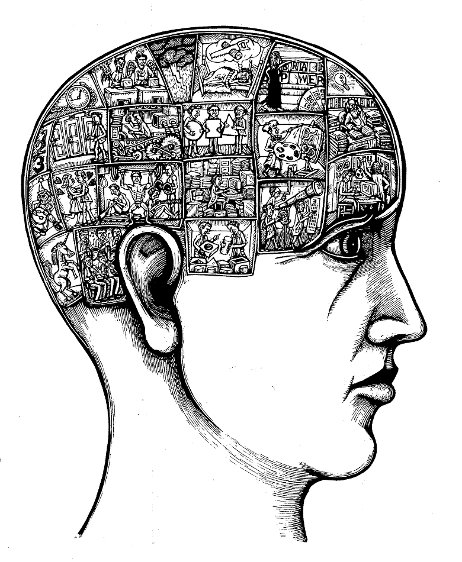
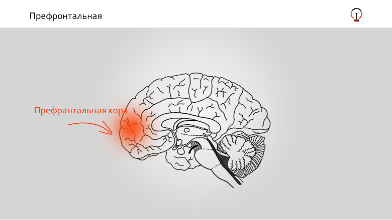
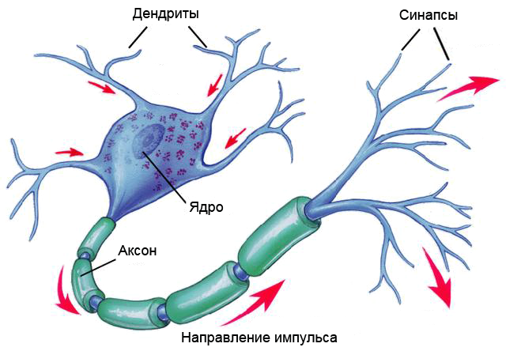
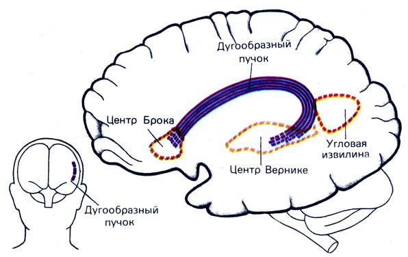

То, что знание английского наращивает зарплату и открывает все двери
– это из разряда «спасибо, кэп». Но знали ли вы, что изучение иностранного языка (пусть даже санскрита или клингонского) сделает вас счастливее? Поможет принимать верные решения? Даже продлит жизнь?
Сегодня вас ждет длинная, но невероятно интересная статья об
устройстве нашего мозга и о причинах его «дружбы» с изучением языков.
1. Польза для мозга
Марк Цукерберг, будучи подростком, много времени потратил на
изучение дневнегреческого. Вот вы наверняка знаете, что классические языки раньше преподавались во всех гимназиях. И сейчас на кафедре ИТМК (Истории и теории мировых культур) МГУ изучение латинского, древнегреческого и любого древне-экзотического на выбор – например, древнекоптского – входит в число обязательных предметов.
Применимо ли все это в текущей жизни? Конечно, нет.
Есть ли от этого польза?
Конечно, да!
Потому что изучение языка – одна из лучших тренировок для развития
мозга, его способности к обучению и восприятию нового. Наш мозг старательно совершенствует действия, которые мы выполняем чаще всего – оптимизирует, привязывает к ним больше гормонов удовольствия и т. д.
Когда вы каждый день смотрите сериалы и едите чипсы, это не значит,
что ваш мозг бездействует. Он просто совершенствует процесс поедания чипсов и просмотра сериалов.

Именно изучение языков позволяет нам в дальнейшем осваивать любую
систему: новый язык программирования, новую технологию, новые знания о мире. А способность к освоению одновременно нескольких систем приводит нас к новым открытиям – продуктов, бизнесов, технологий. И чаще всего это происходит, когда к одной области знаний мы применяем идеи из другой системы или области.
Мы специально привели в пример экзотический язык, а не английский.
Всем и так понятно, что английский учить полезно. Он универсален – помогает в работе, в путешествиях по всему миру и не только.
Зато пример чего-то на вид бесполезного, но для мозга обладающего
той же пользой, нагляднее показывает, как изучение нового языка влияет на наш мозг. Причем древние языки для мозга намного полезнее, чем английский. Для нашего сознания это совсем новая система, с которой нет никаких ассоциаций в современном мире (мало синонимов, нет использования в новоязе).
– Итак, первое и главное: изучение любого языка прокачивает нашу
способность учиться и исследовать. Так же, как самый эффективный набор тренировок развивает мышцы тела.
– Второе: изучение языка в буквальном смысле меняет личность и
обогащает наше понимание реальности.
Как это?
Если глаза – это условные окна для нашего тела, то язык и слова –
условные окна для нашего сознания и личности. Вся парадигма личности в современной психофизиологии построена на следующем: язык настолько развит, что в нем есть слова для описания этой личности и ее отличий от других, а также значимые понятия для обозначения разных ее оттенков. Зато в языках народов, где распространен буддизм, недостаточно слов для описания личности и процессов сознания.
Это научный факт – язык расставляет значения для объектов в
окружающем мире. Что-то становится для нас значимым, если у этого есть название, и это название к тому же вызывает позитивные эмоции. Например, в эскимосских языках более 20 слов обозначают снег. Потому, что в их мире снег имеет огромное значение. Если вы выучите эти 20 слов, ваше представление о снеге изменится навсегда. Также, если вы выучите французский, ваше отношение к еде поменяется драматически. Просто потому, что теперь вы сможете описать ее значительно большим количество слов, чем раньше.
То есть, когда мы учим новый язык, суть не в том, чтобы вызубрить
как можно больше значений уже известных нам слов. Такой подход к языку будет слишком трудным и не принесет желаемого результата. Изучение языка обогащает наши способности к анализу и восприятию окружающего мира, потому что мы начинаем замечать (и узнавать!) в нем больше разнообразных вещей.
Что происходит с мозгом, который изучает язык. Как это все организовано внутри
Наш мозг – очень сложная система,
состоящая из множества частей. До
сих пор далеко не все из них изучены – с точки зрения того, что за что отвечает. Кроме того, мозг – система взаимосвязей. То есть эти части еще и образуют множество комбинаций, влияющих на наши решения, оценки, эмоции, рефлексы и т.д. Сквозь эти части проходят нейропути (например, норадреналиновые или дофаминовые). По ним движутся гормоны, большей частью нейромедиаторы, и включают те или иные области мозга или активируют нейронные связи. Есть еще ряд механизмов, которые, в зависимости от ситуации, включают и выключают активность разных частей мозга.
Но за рациональные мысли, обучение, креативность – то, с чем мы
привыкли ассоциировать человека – отвечает в основном префронтальная или передняя часть коры головного мозга.

Здесь находится больше всего нейронных
связей или синапсов.
Их у человека настолько много, что большая их часть в каждый момент времени не занята, иными словами, не вовлечена в процесс выживания организма. Например, мозг мыши фактически весь подчинен функциям выживания и рефлексов. А наши неиспользованные синапсы свободны и в любой момент времени готовы перестроиться и заняться чем-то новым.
Что такое обучение на уровне физиологии?
Обучение – это формирование новых
нейронных связей – синапсов – и
изменение уже существующих. Американский нейрофизиолог Айра Блэк определял знание как архитектуру сети между определенными нейронами, а обучение как модификацию этой архитектуры.
Синапс – это точка соединения нейронов.
Как они соединяются?
Химически. Их связывают через рецепторы аксонов и дендритов определенные химические вещества – лиганды. Большая часть из них – известные нам нейромедиаторы, например, эндорфин или дофамин. Нейробиолог Кэнденс Перт назвала их даже informational substance – информационное вещество. Каждый раз, когда мы узнаем что-то новое, возникает очередная цепочка или меняется старая. Нейромедиаторы как буквы алфавита, а цепочки – это набор слов, которыми мы владеем.
Новый язык в буквальном смысле – физически – рождается в нашем мозгу
в виде новых синапсов.

У человека более 100 миллиардов нейронов.
Каждый соединен с сотнями
других нейронов синапсами в количестве от 1 до 10 тысяч. По расчетам ученых понадобилось бы около 32 миллионов лет, чтобы сосчитать все синапсы в коре нашего мозга. Представляете, какая у нас потенциальная мощность по формированию новых цепочек, а, значит, нового знания?😉
Итак, мы узнали, что в принципе
происходит в мозгу во время
обучения. Сам же процесс изучения языка локализуется в левом полушарии – в перисильвиевой области.
Передняя часть этой области – центр Брока
– отвечает прежде всего за
грамматику и синтаксис, в то время как задняя – центр Вернике – за звучание слов и их понимание. Например, если у человека поврежден центр Брока, он не сможет говорить, а если центр Вернике, он перестанет понимать услышанное.

Теперь о механизме запоминания языка…
Вильям Левельт, директор Института по
психолингвистике Макса Планка,
Нидерланды, идентифицировал три системы, которые участвуют в процессе запоминания и использования слов в ежедневной речи: лексическую, синтаксическую и фонетическую. Лексическая система активируется, когда мы хотим что-то сказать. Она отвечает за значения и определения – не за слова, а за их смыслы. Поэтому, когда мы подбираем слово, мы сначала знаем, скорее даже «чувствуем», его значение. Активируем смысл и дальше уже ищем подходящее ему, значению, слово.
Синтаксическая система применяет синтаксические правила языка говорящего
(спряжение глаголов, падежи, род) к значению. Именно этот центр отвечает за известный феномен – «на кончике языка», когда мы почти готовы произнести слово, но оно еще до конца не поймано. Мы уже знаем значение, синтаксическая система включает выбор слова и предлагает словоформы используемого языка. В этот момент у нас всплывают привычные грамматические конструкции и слова соревнуются между собой: Выбери меня!!
И, наконец, фонетическая система – применение звуков к значению. Она
включается и вуаля – мы произносим слово. Это помогает понять ситуацию. Например, когда мы забываем слово, мы пытаемся вспомнить звук – «слово на с», «слово шипящее», мы перебираем звуки и вспоминаем слово.
Итак, у нас есть три системы: значения, ассоциированные с ними звуки и
правила родного языка. Все три системы взаимосвязаны.
Теперь понятнее, почему так сложно выучить иностранный язык как родной?
Язык – это не просто единица слова. Все его части (значение, форма, звук) находятся в разных частях мозга. То есть, когда мы учим иностранный язык, на самом деле мы осваиваем 3 разные системы, или даже 3 разных языка.
Это же и объясняет, почему некоторые однобокие подходы к изучению языка
– только через говорение или только через грамматику – не работают.
Левелт считает также, что с возрастом мы не теряем способности к языкам
и скорость запоминания. Просто количество ассоциаций и карточек в наших трех системах увеличивается, а значит требуется значительно больше времени для обработки имеющейся информации.
Эту его мысль подтверждают и эксперименты с «билингвами» – людьми,
одинаково свободно владеющими несколько языками на уровне родного. Их скорость обработки одного слова обычно медленнее, чем у людей, свободно говорящих только на одном языке. Но скорость здесь понятие относительное. Мы способны за секунду полностью сформировать 2-3 слова из 10-15 слогов суммарно. В среднем, у нас уходит 71 тысячная секунды, чтобы найти слово для обозначения какого-то смысла. А значит для обычного человеческого восприятия билингвы вовсе не думают медленнее😉
Теперь вы понимаете, как радикально меняет наш мозг изучение
иностранного языка и почему это так сложно?
2. Польза для жизни
Оказывается, знание иностранного языка может влиять на нашу жизнь.
Принимать в жизни более правильные решения
Как известно, у людей есть две системы принятия решений: интуитивная
и рациональная. Рациональная задействована очень редко. Обычно мы выбираем интуитивно – на основе эмоций, физиологического состояния или предзаданных шаблонов, которые хранятся в нашем мозге для ускорения обработки процессов. Эти шаблоны называются «когнитивными искажениями» и заставляют нас принимать глупые решения, игнорируя реальность.
Многочисленные исследования доказали – когда человек думает или
формулирует какую-то ситуацию на иностранном языке, он принимает более рациональные решения.
Почему? Наши шаблоны хранятся на родном языке.
Наша рациональность выключается при любой эмоции, хорошей или
плохой. С родным языком у нас связано много эмоциональной памяти и много контекста. Нас легче оскорбить на родном языке, чем на чужом. Проверьте себя: что вызывает у вас больше эмоций: c***ка или b***ch? То-то же😉
Так что, когда вы формулируете проблему на чужом языке и на нем
же пытаетесь найти решение, результат будет более логичным и взвешенным. Ведь решение принимает наша умная рациональная система, а не интуитивная. Но для этого надо хорошо знать иностранный язык, чтобы вместо принятия решений не заниматься подбором слов.
Быть счастливее
Как вы помните, за язык у нас отвечает левое полушарие,
Перисильвиевая зона. Активность в ней обычно связана с позитивными эмоциями, например, с желанием вести себя открыто по отношению к окружающим. В противоположность избегающему поведению, которое сопровождает активность в правом полушарии.
Поэтому процесс «поболтать» вызывает у нас позитивные эмоции и
мы чувствуем себя счастливее. И когда активируем центры говорения, чтобы что-то сказать на иностранном языке, то испытываем прямо физиологическое удовольствие.
Жить дольше
Изучение языка заставляет мозг работать и многое в нем меняет
(помните нейронные цепочки?) Поэтому он становится более пластичным и адаптивным. Более того, это помогает противостоять некоторым болезням старости. Например, в рамках исследования 2010 года специалисты изучили данные 200 пациентов, страдающих болезнью Альцгеймера, и обнаружили: те, кто знал несколько языков, сталкивались с симптомами на 5,1 лет позже.
Ну как? Вас что-то останавливает сейчас же все бросить и
заняться изучением английского или любого другого языка?
Да? Так это оно, когнитивное искажение, которое ни к чему
хорошему не приведет. А теперь попробуйте задать себе тот же самый вопрос на иностранном языке😉 Ощущаете разницу?